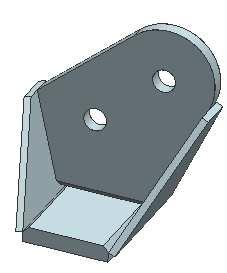

Display only the WAVE linked bodies
Turn off the display of the assembly components, so you just work with the WAVE linked bodies.
 Assembly Navigator
Assembly Navigator
-
 the Assembly Navigator window to deselect everything
the Assembly Navigator window to deselect everything
-
 wb_001 (deselect check box, to turn off display)
wb_001 (deselect check box, to turn off display)
-
(deselect wb_002, wb_003, wb_004)
-
wb_001
wb_002
wb_003
wb_004 -

Only the WAVE linked bodies are displayed.